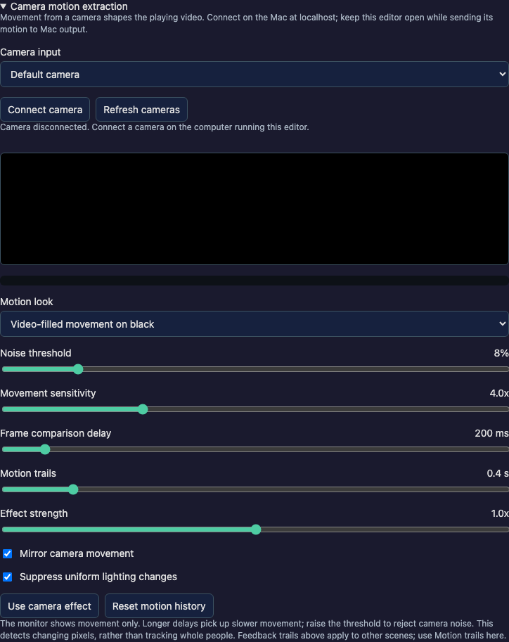

8. Camera movement and music
Use deliberate input connections to turn gestures and sound into visuals.
Connect a camera on the capturing Mac
- Open the Mac editor on
http://localhost:8008/and choose a background video. - Open Prepare → Colour, VFX & 3D text → Camera motion.
- Choose a camera and click Connect camera. Grant the browser's camera permission.
- Choose a Motion look and move in front of the camera. The monitor shows extracted movement, not the ordinary camera picture.
- Add a 3D logo layer if desired, then rehearse before sending the composition to Mac.


Video-filled movement on black reveals library footage only in moving areas. Motion glow over video paints movement on the background. Motion-driven distortion bends the source near movement. Use a stationary camera for local gestures; moving the camera moves the whole scene. This compares frames and changing edges rather than tracking complete people. A still person can fade from view.
| Control | How to tune it |
|---|---|
| Noise threshold | Raise it to reject sensor noise and tiny changes; lower it to reveal subtle movement. |
| Movement sensitivity | Amplifies movement that survives thresholding. |
| Frame comparison delay | Compares with a frame 50 ms to 2 seconds earlier; longer values reveal slower movement. |
| Motion trails | Controls how long detected movement remains, from no trail up to 3 seconds. |
| Effect strength | Adjusts the visual influence of the mask. |
| Mirror camera movement | Reverses the horizontal response. |
| Suppress uniform lighting changes | Helps reject scene-wide exposure/lighting shifts. |
| Reset motion history | Clears comparison frames and trails without disconnecting. |
Turn VFX off to return to ordinary video without disconnecting the camera. Disconnect camera releases the device. Closing or refreshing its capturing editor also releases it. An ordinary HTTP iPad LAN link cannot request camera access; connect from the Mac's localhost editor or an appropriate secure origin. Refresh cameras after attaching a browser-visible USB camera/capture device.
A take sends the chosen camera-source identity to Mac output. Keep the capturing editor open and visible: it sends a small movement mask through the local app server. Camera permission and live frames are not saved in a playlist. Reconnect before using a saved camera cue. The offline showcase's recorded movement study demonstrates the processing but is not a live connected camera.
Auto Perform with music

- Choose the intended microphone or USB input. For live output, use the Mac engine's audio setup rather than the iPad's microphone.
- Start Auto Perform locally once to grant permission and activate browser audio. Check the input meter.
- Choose Balanced, Hypnotic, High Energy or Ambient style; set the change interval in bars and choose the whole library or current playlist pool.
- Open Curate videos to include/exclude sources and assign energy tags.
- Watch BPM, beat, section and next-decision status while music plays.
Hold video prevents source changes while other decisions continue. Lock layout preserves the layout. Next on beat queues a source change on a detected beat. Tap tempo and Resync help align the system when detection needs guidance. Performance decisions can be inspected in the log. Musical detection is live analysis, so rehearse it with the actual music/input; a bar interval is not a guarantee of a specific artistic cut.
Text lists and audio-reactive VFX
Open 3D text for Auto Perform to create named lists of event names, Instagram IDs and URLs. Enable the entries you want to rotate; Instagram IDs show a red @. List changes save in this browser as you make them. Preview VFX's Venue sound connection drives ripple/smear/bass responses in that preview. It analyses the selected live input; muting the video does not mute an independently connected input, and source-video audio is not automatically the VFX analysis feed.